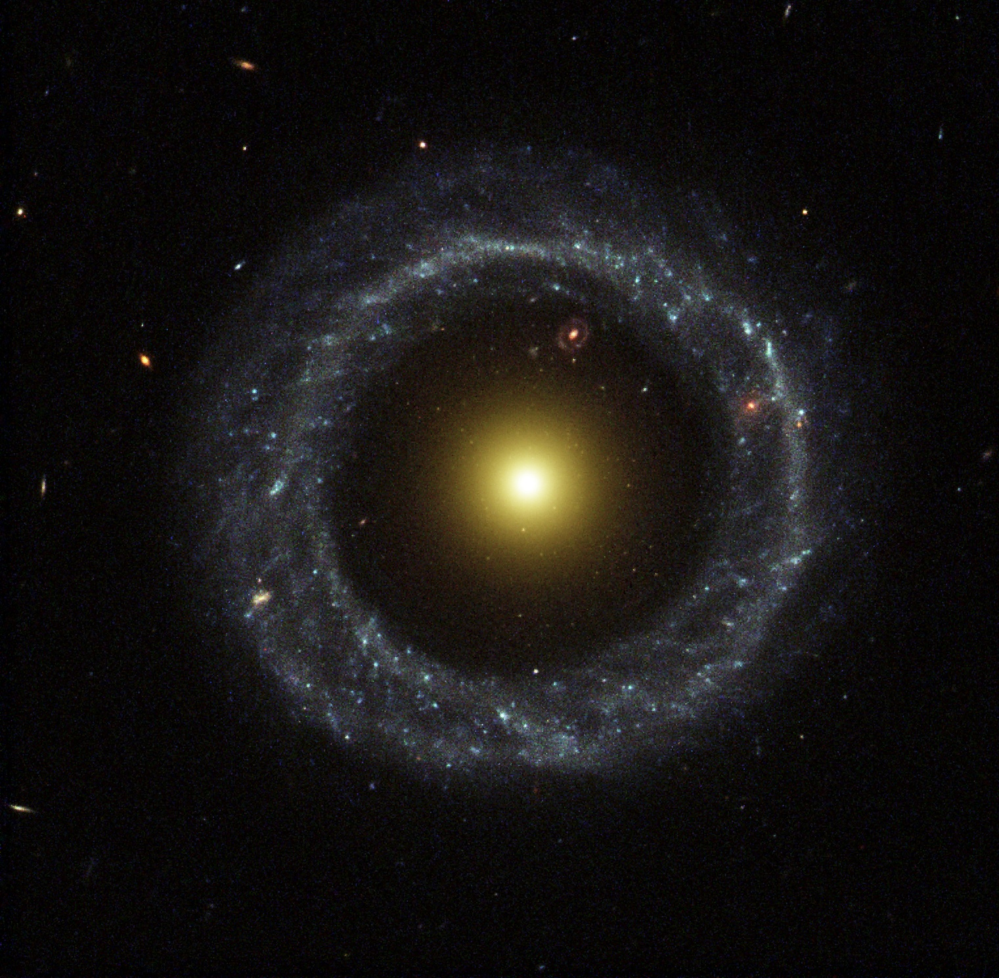

Hoags Objekt är en galax som har en diameter som är 148 000 ljusår. Den upptäcktes och fick sitt namn efter Arthur Hoag, han upptäckte den år 1950. Den är klassificerad som en underlig galax eftersom den har en cirkulär ring runt den fylld med unga, blåa stjärnor och i mitten sitter de äldre, och gula stjärnor. Den här typen av beteende ses inte i många andra galaxer.